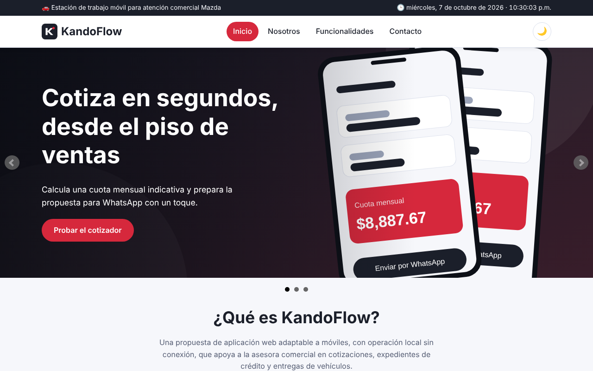
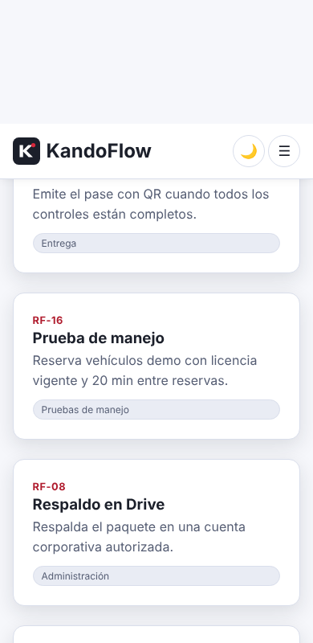
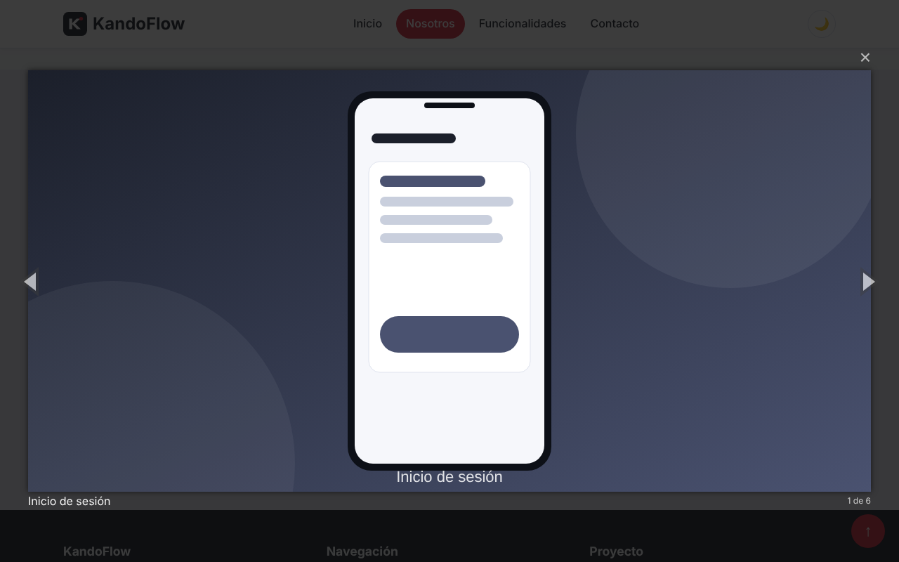
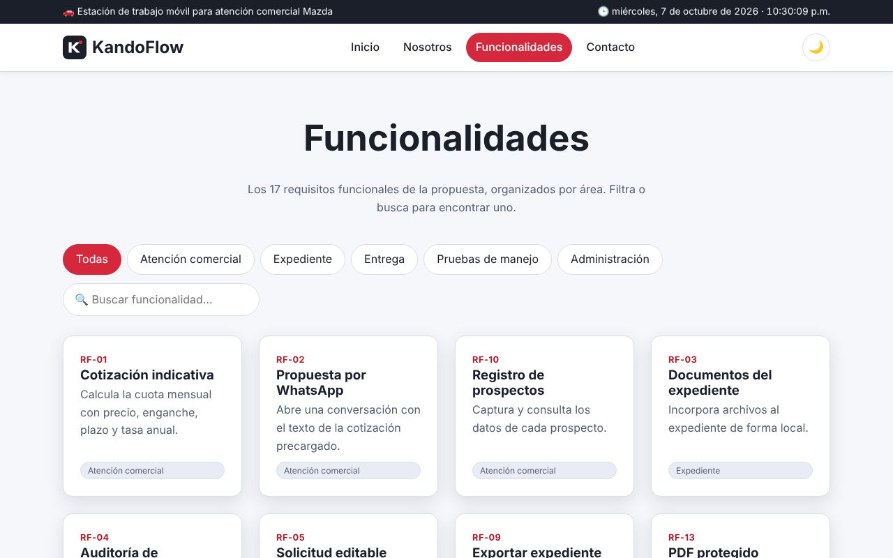
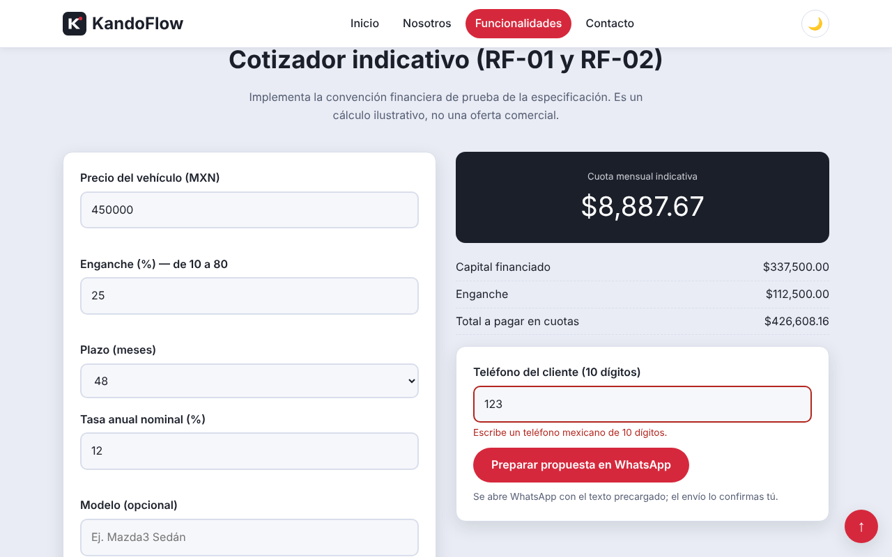
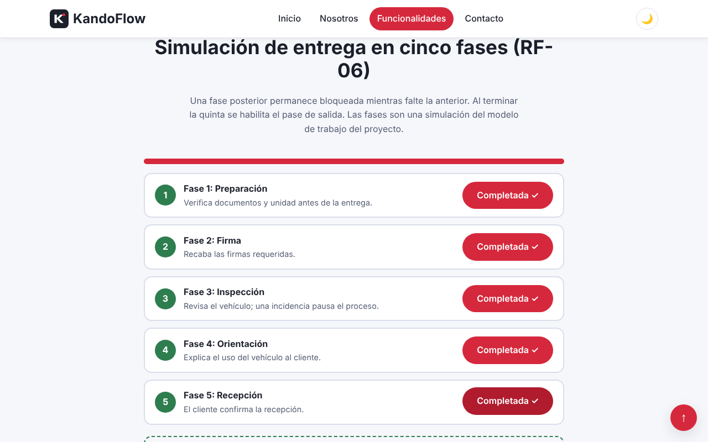
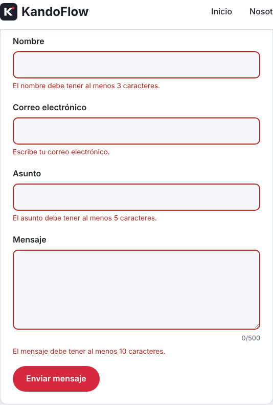

| Alumno: | Rodrigo Valdespino Vértiz |
| Materia: | Programación para Internet |
| Profesora: | Karla Vianney Ramos García |
| Fecha: | 11 de octubre de 2026 |
| Repositorio: | github.com/James-gosling/Kando-flow (carpeta sitio-web) |
| Video: | youtu.be/n128mnoHusg |
Este documento presenta el sitio web interactivo desarrollado para la Actividad 9 de la materia Programación para Internet. El sitio integra HTML5, CSS3, JavaScript, jQuery y dos plugins de jQuery, y se publicó con control de versiones en GitHub.
El tema del sitio es KandoFlow, una propuesta de aplicación web adaptable a móviles para apoyar a una asesora comercial de la marca Mazda en tres tareas: cotizar un vehículo, integrar el expediente de crédito del cliente y conducir la entrega del vehículo. KandoFlow surgió en la materia Ingeniería de Software I, donde se documentó su visión, sus requisitos y un prototipo en Figma. Para esta actividad se tomó esa propuesta como el «negocio» del sitio, de modo que el contenido es coherente y verificable con la documentación existente en el mismo repositorio.
Es importante precisar que KandoFlow, como aplicación, todavía no está implementada. El sitio web presenta la propuesta y ofrece dos demostraciones funcionales: un cotizador indicativo y una simulación de entrega en cinco fases.
Objetivo general. Desarrollar un sitio web completo, responsivo e interactivo que integre HTML5, CSS3, JavaScript, jQuery y al menos un plugin de jQuery, utilizando GitHub para su desarrollo.
Objetivos específicos.
| Página | Archivo | Contenido |
|---|---|---|
| Inicio | index.html | Carrusel principal, presentación de KandoFlow, cifras animadas y problemas que busca resolver. |
| Nosotros | nosotros.html | Sobre el proyecto, roles del sistema, línea del tiempo, preguntas frecuentes y galería de conceptos de pantalla. |
| Funcionalidades | funcionalidades.html | Los 17 requisitos funcionales con filtro y buscador, cotizador indicativo y simulación de entrega. |
| Contacto | contacto.html | Formulario validado, datos del proyecto y mapa con la ubicación de Mazda Zapata Querétaro. |
Identidad visual. Se usó una paleta de grafito y rojo (alusiva a la marca del sector automotriz), tipografía de sistema sin serifas, tarjetas con bordes redondeados y un tema claro y otro oscuro. Todas las páginas comparten la misma hoja de estilos (css/styles.css), el mismo encabezado con menú y el mismo pie de página. Las ilustraciones son archivos SVG creados para el proyecto, por lo que no hay imágenes de terceros.

Diseño responsivo. El diseño se adapta a pantallas pequeñas con CSS Grid, Flexbox y consultas de medios. En el ancho de un teléfono el menú se convierte en un botón desplegable y las columnas pasan a una sola. Se verificó que ninguna de las cuatro páginas genere desplazamiento horizontal a 390 px de ancho.

Las páginas usan etiquetas semánticas (header, nav, main, section, article, footer), etiquetas label asociadas a cada campo, atributos aria y un enlace para saltar al contenido, con el fin de mejorar la accesibilidad. En CSS3 se emplearon variables personalizadas (para el tema claro y oscuro), Grid, Flexbox, transiciones y la consulta prefers-reduced-motion para respetar a quien prefiere menos animación.
El archivo js/main.js contiene el código sin jQuery:
| Requisito | Implementación |
|---|---|
| Fecha y hora actual | Un objeto Date y setInterval actualizan cada segundo la barra superior con el formato en español de México. |
| Validación del formulario | Reglas por campo con expresiones regulares, mensajes de error individuales, contador de caracteres y bloqueo del envío si hay errores. |
| Botón «Ir arriba» | Aparece tras bajar 300 px y regresa al inicio con desplazamiento suave. |
| Funcionalidad adicional | Tema oscuro guardado en localStorage, indicador de conexión (en línea o sin conexión), cotizador indicativo y simulación de entrega. |
El archivo js/jquery-app.js concentra el uso de jQuery:
on("click") para el menú móvil, los filtros y los botones; delegación de eventos en el acordeón y en la simulación de entrega; on("input") en el buscador.fadeIn y fadeOut en el filtrado, slideToggle en el acordeón, slideDown en el pase de salida y animate en los contadores de cifras.toggleClass, attr, text, css y prop para actualizar el estado de cada fase, el resultado del cotizador y los mensajes.| Plugin | Dónde se usa | Configuración |
|---|---|---|
| bxSlider 4.2.17 | Carrusel de Inicio y carrusel de «problemas que resuelve». | Reproducción automática, transición con desvanecimiento, indicadores y pausa al pasar el cursor. |
| Magnific Popup 1.1.0 | Galería de Nosotros. | Ventana emergente de imágenes con flechas, contador y títulos. |
$(".slider-hero").bxSlider({
auto: true, pause: 5000, mode: "fade", speed: 800,
pager: true, controls: true, autoHover: true
});
$("#galeria").magnificPopup({
delegate: "a", type: "image",
gallery: { enabled: true, tCounter: "%curr% de %total%" }
});

Las librerías (jQuery, bxSlider y Magnific Popup) están guardadas dentro del repositorio, en la carpeta vendor, por lo que el sitio no depende de redes de distribución externas para su funcionamiento básico.
La página de Funcionalidades presenta los 17 requisitos funcionales de KandoFlow, agrupados en cinco áreas. Con jQuery se filtra por área y se busca por texto en tiempo real; si no hay coincidencias, se muestra un mensaje.

Implementa la convención financiera definida en la especificación de requisitos del proyecto (RF-01): el capital es el precio multiplicado por uno menos el enganche; la tasa mensual es la tasa anual entre 12; y la cuota es P·i / (1 − (1 + i)−n), o P / n si la tasa es cero. Valida que el enganche esté entre 10 % y 80 %, que el plazo sea 12, 24, 36, 48, 60 o 72 meses y que la tasa no sea negativa.
function calcularCuota(precio, enganchePct, n, tasaPct) {
var capital = precio * (1 - enganchePct / 100), i = tasaPct / 100 / 12;
var cuota = i === 0 ? capital / n : capital * i / (1 - Math.pow(1 + i, -n));
return { capital: capital, cuota: Math.round(cuota * 100) / 100 };
}
Con los datos de prueba de la especificación (precio de $450,000, enganche de 25 %, plazo de 48 meses y tasa de 12 %), el sitio calcula un capital de $337,500.00 y una cuota de $8,887.67, igual al valor esperado en el documento; con tasa de 0 % calcula $7,031.25. Además, permite preparar la propuesta en WhatsApp con el texto precargado (RF-02); el envío lo confirma la persona.

Representa la regla de que una fase posterior permanece bloqueada mientras no se complete la anterior (RF-06). Al completar la quinta fase se habilita el pase de salida. Las fases (preparación, firma, inspección, orientación y recepción) son una simulación del modelo de trabajo del proyecto.

El formulario solicita nombre, correo electrónico, asunto y mensaje, y se valida con JavaScript antes de «enviarse».
| Campo | Regla de validación |
|---|---|
| Nombre | Mínimo 3 caracteres; solo letras, espacios y signos comunes de nombres. |
| Correo | No vacío y con formato de correo válido. |
| Asunto | Mínimo 5 caracteres. |
| Mensaje | Entre 10 y 500 caracteres, con contador en pantalla. |
Cada campo muestra su propio mensaje de error y cambia de color (rojo si es inválido, verde si es válido). Si hay errores, se bloquea el envío y el cursor regresa al primer campo con problemas. Con datos correctos se muestra una confirmación. El envío es una simulación, porque el sitio no tiene servidor.

La página de Contacto incorpora un mapa de Google Maps incrustado que muestra la agencia Mazda Zapata Querétaro, en el Boulevard Bernardo Quintana 588, colonia San Pedrito Peñuelas, 76148, Santiago de Querétaro. El mapa permite hacer zoom, desplazarse y abrirse en Google Maps mediante un enlace. Se eligió esta solución porque los servidores públicos de mosaicos de OpenStreetMap y de CARTO rechazan el uso desde archivos locales o sin clave de acceso, como se comprobó durante las pruebas.
<iframe id="mapa" title="Mapa interactivo con la ubicación de Mazda Zapata Querétaro" loading="lazy" allowfullscreen src="https://maps.google.com/maps?q=Mazda+Zapata+Quer%C3%A9taro,+Blvd.+Bernardo+Quintana+588&z=16&output=embed"></iframe>
El proyecto se desarrolló en el repositorio de GitHub James-gosling/Kando-flow, dentro de la carpeta sitio-web, junto con la documentación previa de KandoFlow (carpeta docs). El trabajo se hizo en una rama de desarrollo, con commits descriptivos por etapa, y se integró a la rama principal mediante pull requests.
sitio-web/ ├── index.html · nosotros.html · funcionalidades.html · contacto.html ├── css/styles.css # estilos, variables, tema oscuro y responsivo ├── js/main.js # JavaScript: reloj, validación, tema, «ir arriba» ├── js/jquery-app.js # jQuery: eventos, efectos, DOM y plugins ├── img/ # ilustraciones SVG propias ├── vendor/ # jQuery, bxSlider y Magnific Popup ├── docs/ # documento institucional y capturas └── README.md
Historial de commits. Las etapas principales quedaron registradas como commits separados: librerías locales; identidad visual y estilos; páginas HTML; JavaScript y jQuery; documentación; eliminación de menciones personales del sitio; corrección del mapa y cambio al mapa de Google Maps.
Video. El funcionamiento del sitio, el código principal y el repositorio se explican en el video de la entrega: https://youtu.be/n128mnoHusg.
El sitio cumple los requisitos de la actividad: cuatro páginas con navegación y pie de página, diseño responsivo, validación del formulario con JavaScript, fecha y hora, botón «Ir arriba», una funcionalidad adicional, uso de jQuery en eventos, efectos y manipulación del DOM, dos plugins de jQuery, un mapa interactivo y un repositorio organizado en GitHub.
Durante el desarrollo se aprendieron varias lecciones prácticas. La primera es que depender de servicios externos tiene riesgos: los mosaicos gratuitos de mapas dejaron de funcionar al abrir el sitio localmente, lo que obligó a cambiar de proveedor. La segunda es que reutilizar una documentación de requisitos existente permitió validar el cotizador contra un resultado esperado conocido. La tercera es que la validación del lado del cliente mejora la experiencia, pero no sustituye a la validación en un servidor cuando el sistema sea real.
Como trabajo futuro, se podría conectar el formulario a un servicio de correo, convertir el cotizador y la simulación de entrega en la aplicación real descrita en la propuesta (con persistencia local y control de acceso por rol) y agregar pruebas automatizadas.
Chacon, S. y Straub, B. (2014). Pro Git (2.ª ed.). Apress. https://git-scm.com/book/es/v2
Duckett, J. (2014). JavaScript and jQuery: Interactive front-end web development. Wiley.
Flanagan, D. (2020). JavaScript: The definitive guide (7.ª ed.). O'Reilly Media.
GitHub. (s. f.). Documentación de GitHub. https://docs.github.com/es
Google. (s. f.). Cómo compartir o incorporar un mapa. Ayuda de Google Maps. https://support.google.com/maps/answer/144361
Marcotte, E. (2011). Responsive web design. A Book Apart.
Mozilla. (s. f.). MDN Web Docs: HTML, CSS y JavaScript. https://developer.mozilla.org/es/
OpenJS Foundation. (s. f.). jQuery API documentation. https://api.jquery.com/
Semenov, D. (s. f.). Magnific Popup: Responsive lightbox and dialog script. https://dimsemenov.com/plugins/magnific-popup/
Wanderski, S. (s. f.). bxSlider: The responsive jQuery content slider. https://bxslider.com/
World Wide Web Consortium. (2023). Web Content Accessibility Guidelines (WCAG) 2.2. https://www.w3.org/TR/WCAG22/
Valdespino Vértiz, R. (2026). KandoFlow: visión del producto, especificación de requisitos y prototipo [Documentación del proyecto, Ingeniería de Software I]. Repositorio James-gosling/Kando-flow, carpeta docs. https://github.com/James-gosling/Kando-flow/tree/main/docs